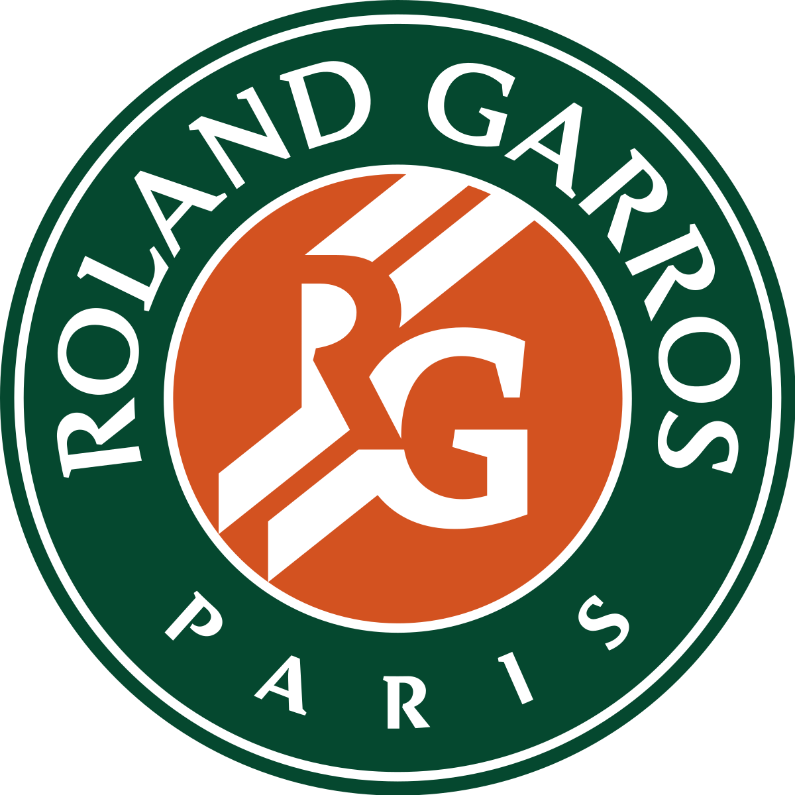

"French Championships" and "Roland-Garros" redirect here. For other uses, see French Championship (disambiguation) and Roland Garros (disambiguation). This article is about the tennis tournament. For the golf tournament, see Open de France. For the badminton tournament, see French Open (badminton). French Open (Roland-Garros) Logo Roland-Garros.svg Official website Founded 1891; 131 years ago Editions 126 (2022) 92 Grand Slam events (since 1925) Location Paris, XVIe France Venue Stade Roland Garros (since 1928) Societé de Sport de Île de Puteaux, at Puteaux (1891–1894); Tennis Club de Paris, at Auteuil (1895–1908); Société Athlétique de la Villa Primrose at Bordeaux (1909); Croix-Catelan de Racing Club de France at the Bois de Boulogne (1910–1924, 1926); Stade Français at Saint-Cloud (1925, 1927) Surface Clay – outdoors[a] (1908–present) Sand – outdoors (1891–1907) Prize money €42,661,000 (2022)[1] Men's Draw S (128Q) / 64D (16Q)[b] Current champions Rafael Nadal (singles) Marcelo Arévalo Jean-Julien Rojer (doubles) Most singles titles Rafael Nadal (14) Most doubles titles Roy Emerson (6) Women's Draw S (128Q) / 64D (16Q) Current champions Iga Świątek (singles) Caroline Garcia Kristina Mladenovic (doubles) Most singles titles Chris Evert (7) Most doubles titles Martina Navratilova (7) Mixed doubles Draw 32 Current champions Ena Shibahara Wesley Koolhof Most titles (male) Ken Fletcher / Jean-Claude Barclay (3) Most titles (female) Margaret Court (4) Grand Slam Australian Open French Open Wimbledon US Open Last completed 2022 French Open The French Open (French: Internationaux de France de Tennis), also known as Roland-Garros (French: [ʁɔlɑ̃ ɡaʁos]), is a major tennis tournament held over two weeks at the Stade Roland Garros in Paris, France, beginning in late May each year.[c] The tournament and venue are named after the French aviator Roland Garros.[2] The French Open is the premier clay court championship in the world and the only Grand Slam tournament currently held on this surface. It is chronologically the second of the four annual Grand Slam tournaments,[3] the other three are the Australian Open, Wimbledon, and the US Open. Until 1975, the French Open was the only major tournament not played on grass.[4] Between the seven rounds needed for a championship, the clay surface characteristics (slower pace, higher bounce), and the best-of-five-set men's singles matches, the French Open is widely regarded as the most physically demanding tennis tournament in the world
